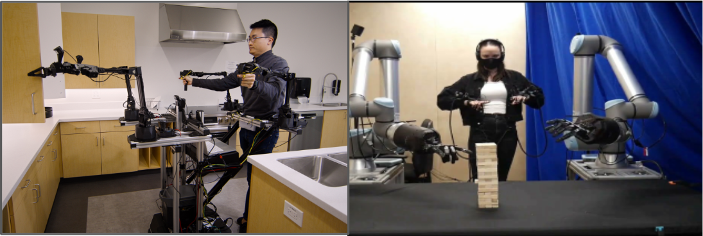

A dual-arm kitchen robot needed to execute a full cooking workflow that mixed structured manipulation tasks with tasks too complex to hand-plan, while keeping hardware cost low. As a major contributor on the team building this framework, I worked on both planning and control: MoveIt2 plus model-based and GPU-based planners computed smooth trajectories for structured tasks like pick-and-place, while a trained policy handled the tasks that needed more intelligence, and a Behavior Tree sequenced these subtasks into the overall cooking process. On the hardware side, I integrated and evaluated three different arm and end-effector combinations to find the best cost-performance fit for kitchen work, and built a ROS-based digital twin sharing the same control and state interface as the real robot, so the team could validate upper-level algorithms in simulation before matching real-world behavior.
Low Latency and Intuitive Teleoperation Framework

Recording expert demonstrations for imitation learning required intuitive, low-latency teleoperation, but the common options each had drawbacks: joint-space leader-follower control (ALOHA-style) has a low learning curve but is hard to master and couples the leader and follower, so collected data can't be shared across robot configurations; Cartesian-space control with a tracker or controller is more intuitive but can suffer from inverse-kinematics issues. I initiated this project and designed a framework in which different sensors or tools control different robot parts, including the arm, gripper, and hand, supporting both Cartesian-space and our own version of joint-space teleoperation. The framework enabled smooth, accurate data collection, though both modes still lack force feedback to the operator, which causes the robot to repeatedly fault on contact-rich tasks, a limitation we are still working to address.
Robot Arm Teach and Play
Manually programming an industrial robot arm was tedious and required specialized skill, and hand-guiding it posed a safety risk without any assistive force. I derived the dynamic model for each joint and designed gravity-compensation and assistive-force algorithms, implemented through the controller's torque-control interface, to enable intuitive teach-and-play control. This improved ease of use and increased operator safety in manual programming scenarios.
Robot arm Online trajectory generation
A robot arm application needed to adjust a pre-planned trajectory's pose in real time, for example to compensate for a shifted workpiece, without recomputing or distorting the path's shape. I formulated a deterministic real-time trajectory compensation algorithm on an IntervalZero KINGSTAR real-time EtherCAT controller running a 1 kHz control loop, allowing a fixed trajectory's pose to be updated on the fly while preserving its relative path. This delivered smooth, responsive robot movement with real-time path compensation.